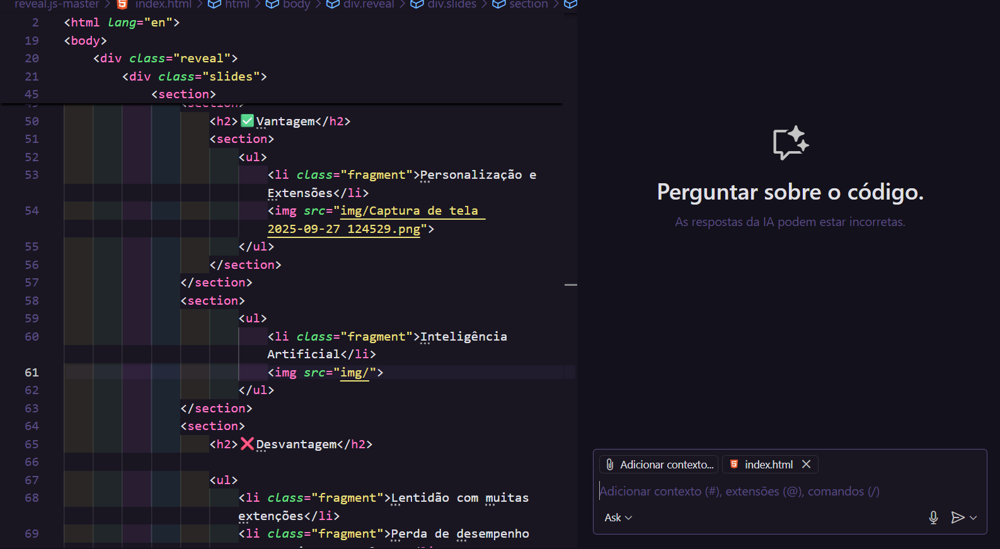
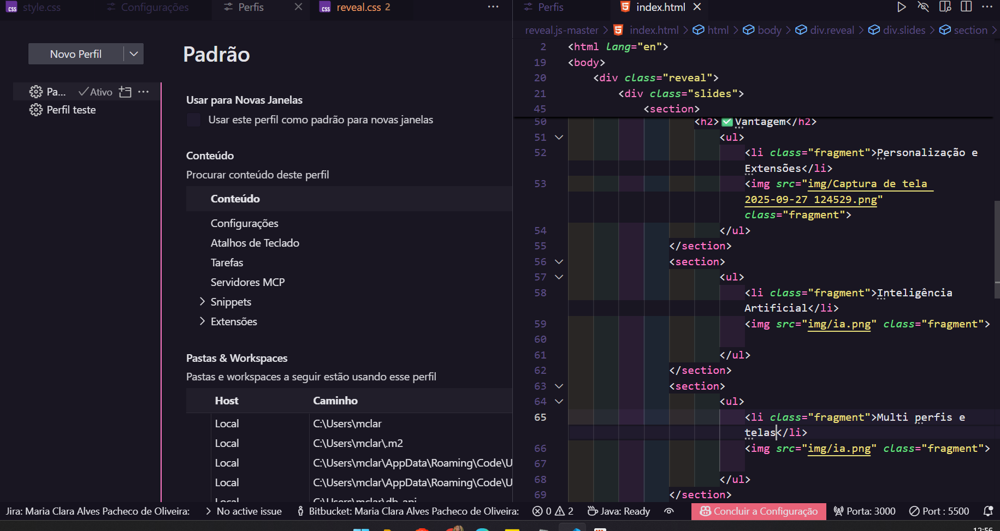
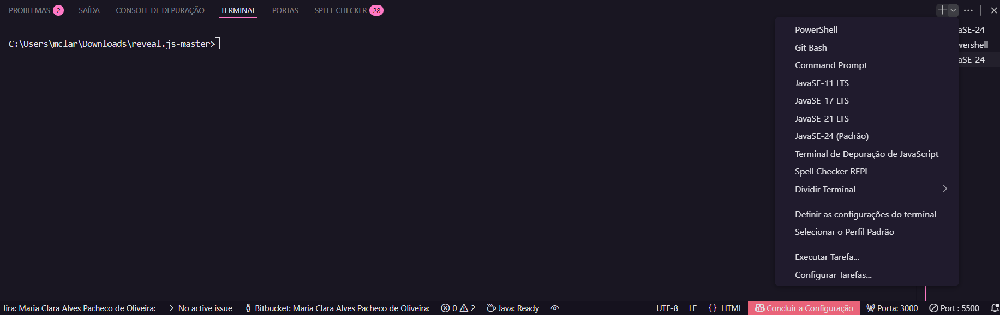
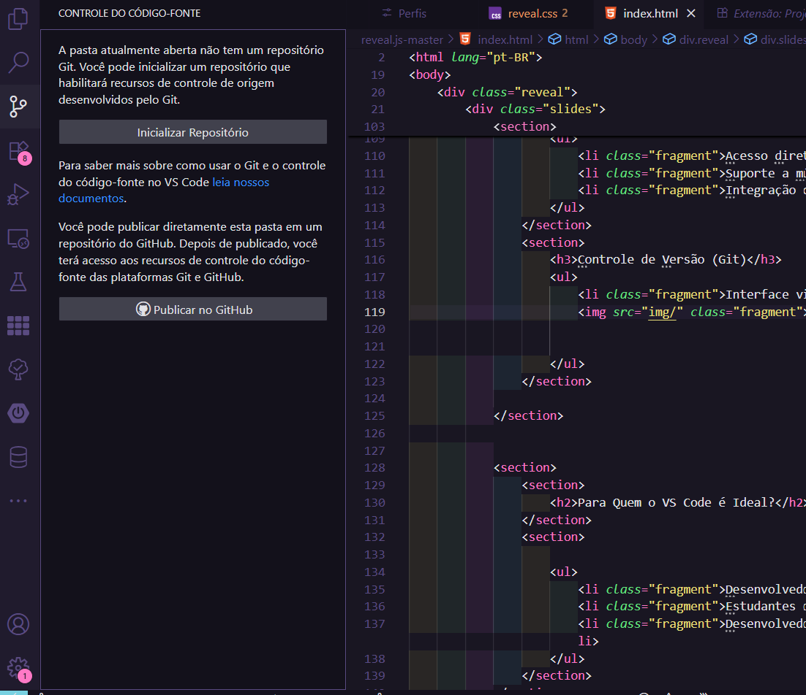
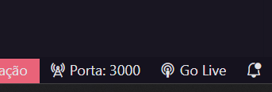

Desempenho
Como o VSCode se comporta em termos de performance
Vantagens
Pontos Fortes
- Leve na instalação
- Inicia rápido
- Responsivo
- Consumo moderado de recursos
Desvantagens
Pontos de Atenção
- Lentidão com muitas extensões
- Perda de desempenho para projetos complexos
- Pode consumir muita memória RAM com muitos arquivos abertos
Usabilidade
Experiência do usuário e funcionalidades
Vantagens
Personalização e Extensões
Mercado de extensões com milhares de opções

Inteligência Artificial
Recursos de IA integrados para produtividade

Multi perfis e telas
Trabalhe em múltiplos projetos simultaneamente

Desvantagens
Configuração Necessária
- Dependência de extensões para funcionalidades avançadas
- Configuração inicial pode ser complexa para iniciantes
- Curva de aprendizado para recursos avançados
Recursos Nativos
Funcionalidades integradas sem necessidade de extensões
Terminal Integrado
Acesso direto ao terminal no editor

Controle de Versão (Git)
Interface visual completa para operações Git

Go Live
Recurso para rodar o projeto localmente

Para Quem o VS Code é Ideal?
Perfis de desenvolvedores que mais se beneficiam
Desenvolvedores Web
Front-end e Back-end
Estudantes
De programação e desenvolvimento
Desenvolvedores Multilinguagem
Que trabalham com diversas tecnologias